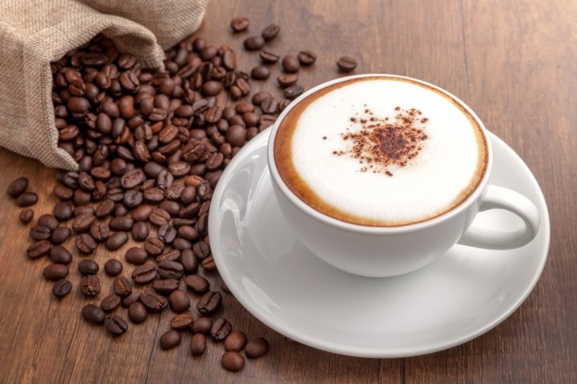
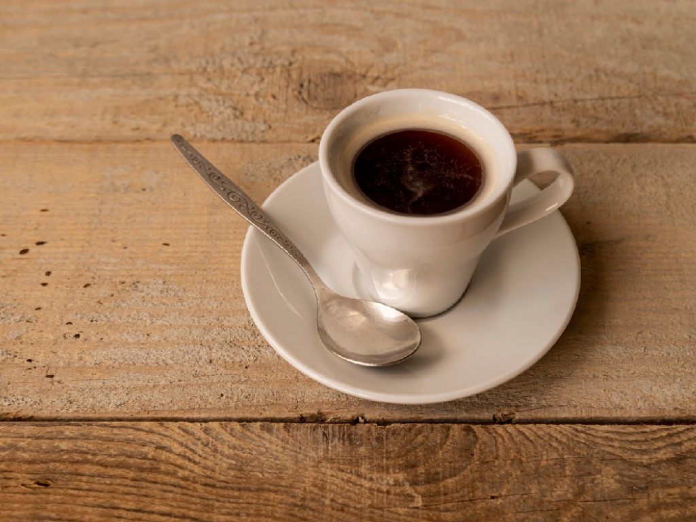

Produk Punya Pateh

Kopi Americano
Americano adalah minuman kopi espresso dengan tambahan air panas. Namanya diambil dari cara orang Amerika meminum espresso. Konon, penyebutan americano adalah sebagai lelucon dan ejekan terhadap orang-orang Amerika yang suka espresso-nya dibuat lebih encer..

Kopi latte
Caffé latte atau kopi latte adalah campuran 1/3 espresso dengan 2/3 steamed milk. Buih susu hanya tipis di permukaan. Meski komposisinya mirip dengan cappuccino, foam pada minuman ini hanya sedikit sehingga rasanya lebih milky dan creamy...

Kopi Espresso
Espresso adalah salah satu minuman kopi paling ikonik di dunia kopi, dikenal karena rasa kopinya yang kuat, konsentrasi yang tinggi, serta lapisan crema yang khas di atasnya..